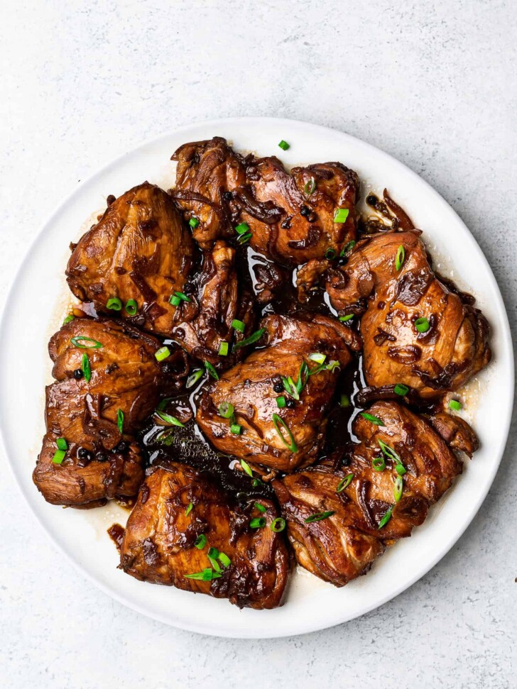

Chicken Adobo

Filipino Chicken Adobo is the national dish of the Philippines and may well become your new favourite Asian chicken dish!
Just a few everyday ingredients I can practically guarantee you already have, it’s an effortless recipe that yields juicy, tender chicken
coated in a sweet savoury glaze with little pops of heat from peppercorns.
This is a chicken thigh recipe and it MUST be made with thighs – no substituting with chicken breast!
Ingredients
- boneless skinless chicken thighs (750g)- cannot substitute with breast, need the fat to transform sauce into a glaze;
- soy sauce (85ml) - all purpose or light soy sauce.
- white vinegar (1/3 cup + 2 tbsp) - just everyday, plain white vinegar.
- onions (1 small brown)
- garlic (3 cloves)
- peppercorns (1 tbsp)
- sugar (2 tbsp)
- bay leaves (4 leaves)
- green onion (2)
Follow these steps
- Combine the soy sauce, white vinegar and bay leaves with the chicken.
Mince the garlic and add and mix it in as well and leave it to marinate
for at least 20 minutes and up to overnight.
-
Heat 1 tbsp oil in a skillet over high heat. Remove chicken from marinade
(reserve marinade) and place in the pan. Sear both sides until browned
- about 1 minute on each side. Do not cook the chicken all the way through.
- Remove chicken skillet and set aside.
- Heat the remaining oil in skillet. Add garlic and onion, cook 1 1/2 minutes.
-
Add the reserved marinade, water, sugar and black pepper. Bring it to a simmer
then turn heat down to medium high. Simmer 5 minutes.
-
Add chicken smooth side down. Simmer uncovered for 20 to 25 minutes
(no need to stir), turning chicken at around 15 minutes,
until the sauce reduces down to a thick jam-like syrup.
-
If the sauce isn't thick enough, remove chicken onto a plate and let the sauce
simmer by itself - it will thicken much quicker - then return chicken to the skillet
to coat in the glaze.
-
Coat chicken in glaze then serve over rice. Pictured in post as a healthy dinner plate
(415 calories) with cauliflower rice and Ginger Smashed Cucumbers.